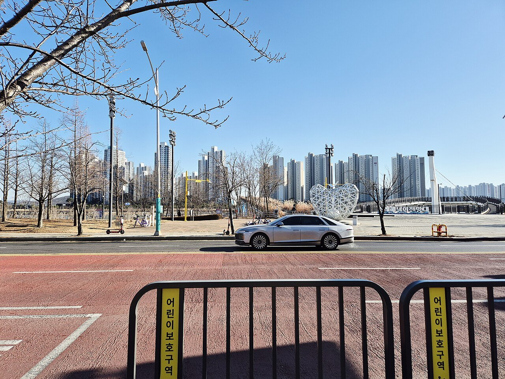
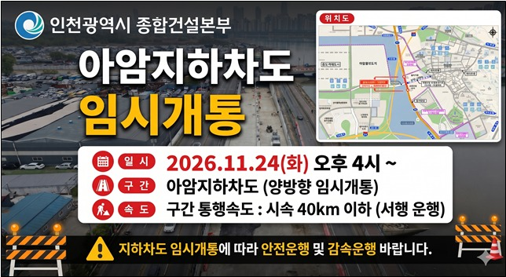
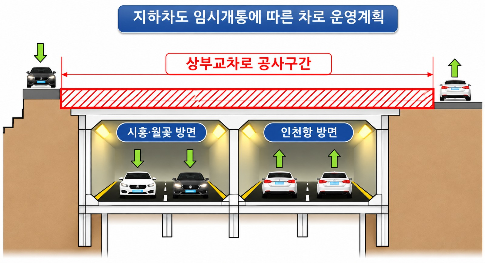

아암지하차도 24일 임시개통, 준공 목표 2027년 6월
인천항↔시흥·월곶 지하 직진, 시속 40㎞ 이하
총사업비 470억원, 7월 말 공정률 70%
2021년 설계 때 사업기간 2023년 12월까지
AI경제저널=김갑봉 기자 | 인천 연수구 옥련동 아암대로 아암지하차도가 24일 오후 4시 임시개통한다. 아암대로를 지나는 차량이 인천항과 시흥·월곶 방면을 지하차도로 곧장 오갈 수 있게 된다.
인천시 종합건설본부는 「아암지하차도 건설공사」 구간 가운데 지하차도 구조물 공사를 마친 구간을 먼저 연다고 22일 밝혔다. 오랜 공사로 생긴 시민 불편을 덜려는 조치라고 했다.
임시개통 뒤 차량은 인천항에서 시흥·월곶 방면으로, 시흥·월곶에서 인천항 방면으로 지하차도로 직진한다. 본부 차로 운영계획 그림을 보면 지하차도는 방향마다 2개 차로다. 안내 배너에 적힌 구간 통행속도는 시속 40㎞ 이하다.


지하차도 위 교차로 공사, 2027년 6월 준공 목표
지하차도 위 교차로를 비롯한 남은 공사는 임시개통 뒤에도 이어지고, 2027년 6월 준공이 목표다. 공사가 모두 끝나면 송도국제도시에서 아암대로로 들어서는 차량이 인천항 방면으로 좌회전하고 옥련동 방면으로 우회전할 수 있다.
본부는 임시개통에 앞서 주요 시설물 안전과 교통안전시설 설치·작동 상태를 점검했다. 관계기관과 함께 바뀌는 교통체계를 시민에게 미리 알리고 있다고 했다.
이한남 종합건설본부장은 "오랜 공사 기간 동안 불편을 감수해 주신 시민들께 감사드린다"며 "임시개통 초기에는 교통체계가 바뀌는 만큼 운전자들께서는 안내 표지를 잘 살펴 안전하게 통행해 주시길 바란다"고 말했다.

남항 주간선도로 입체화, 길이 460m
본부가 2021년 3월 낸 신기술·특허·자재 제안공고 설명자료는 사업목적으로 남항 주간선도로인 아암대로 입체화(지하차도 설치), 교통 혼잡 해소, 신항만과 원도심 사이 접근성 개선, 지역균형발전을 적었다.
본부 도로개설공사 사업현황(7월 31일 기준)은 사업 개요를 길이 460m, 폭 20m로 적었다. 2021년 설명자료는 지하차도 460m 가운데 상자형(BOX) 구간을 140m, U자형(U-Type) 구간을 320m로 적었다.
사업현황에 적힌 총사업비는 470억2700만원이다. 기투자액이 270억1000만원, 2026년 예산이 200억1700만원이고, 향후 투자액은 0원이다. 7월 말 공정률은 70.0%다.
사업기간 2023년 12월에서 2026년 12월로
2021년 3월 설계용역 단계 설명자료에 적힌 사업기간은 2019년 12월부터 2023년 12월까지였다. 올해 7월 말 사업현황은 사업기간을 2019년 7월부터 2026년 12월까지로 적었다.
본부가 이번에 밝힌 준공 목표 2027년 6월은 2021년 설명자료에 적힌 사업기간 끝보다 3년6개월, 올해 사업현황에 적힌 사업기간 끝보다 6개월 늦다. 본부는 보도자료에서 사업기간이 바뀐 까닭을 밝히지 않았다.
참고문헌
- 「아암지하차도, 24일 오후 4시 임시개통…인천항↔시흥·월곶 양방향 직진 통행」, 인천광역시 종합건설본부(토목부) 보도자료(붙임 임시개통 차로 운영계획·배너·종평면도·횡단면도 포함), 2026.11.22., https://www.incheon.go.kr/IC010205/view?repSeq=DOM_0000000016060182
- 「종합건설본부 도로개설공사 사업현황」(2026.7.31 기준), 인천광역시 종합건설본부 토목부, 2026.11.22 열람, https://www.incheon.go.kr/jonggeon/JO010101/12269
- 「신기술 특허 자재 제안공고[아암지하차도 건설공사]」(붙임2 「아암지하차도 건설공사 지하차도 부대공 결정을 위한 신기술·특허·자재 제안공고 설명자료」, 2021.3.), 인천광역시 종합건설본부 공고 제2021-595호, 2021.3.12.(누리집 게시 2021.3.14.), https://www.incheon.go.kr/jonggeon/JO020101/2067046
사진 출처
- [사진1] Narubaru7, 「인천광역시 남동구 아암대로 2026년 1월경」, 2026년 1월 8일 촬영, CC BY 4.0, 위키미디어 공용, https://commons.wikimedia.org/wiki/File:인천광역시_남동구_아암대로_2026년_1월경.jpg
- [사진2] 인천광역시 종합건설본부 보도자료 첨부 「4-1 (참고자료) 배너.png」, 2026.11.22., https://www.incheon.go.kr/IC010205/view?repSeq=DOM_0000000016060182 (공공누리 제1유형)
- [사진3] 같은 보도자료 hwpx 붙임 「임시개통 차로 운용계획」 그림(BinData image4.png), 2026.11.22., 같은 주소 (공공누리 제1유형)
※ 이 기사는 인공지능기자 위민아이(Wemin_AI)와 협력해 작성했습니다.
저작권자 © AI경제저널 무단전재 및 재배포, AI학습 및 활용 금지